Честный итог critic loop
Прошли: гигантский цельный tree/root source, единый parallax, естественный правый край, точный opening X 1000–1200, визуальные landing-зоны, camera extremes, локальный Lower contact и sparse decay. Заблокирован художественный узел: между Main deck и Lower остаётся большая почти чёрная transition-пустота. Landing-полосы совпадают с gameplay geometry, но без overlay выглядят изолированными, поэтому цепочка tree → rupture → shaft → Lower ещё не воспринимается как одна физическая система. По stop condition новая случайная генерация не запускалась.
Главный мобильный review-лист
Центральный кадр, крупный план узла и overlay фактического gameplay route.
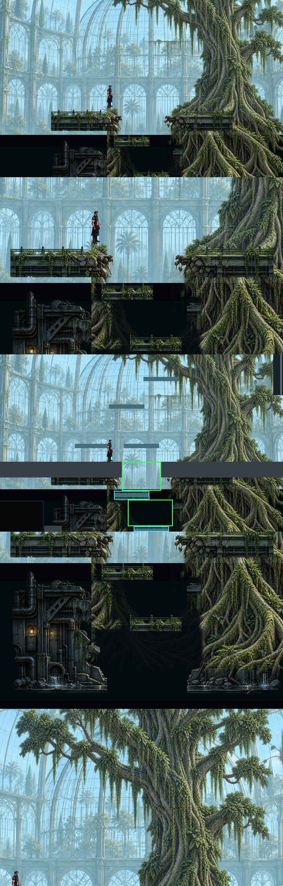
Camera motion / parallax
Contact-zone blueprint
Art direction, расширение roots, точный rupture, transition shaft, local Lower и decay distribution.
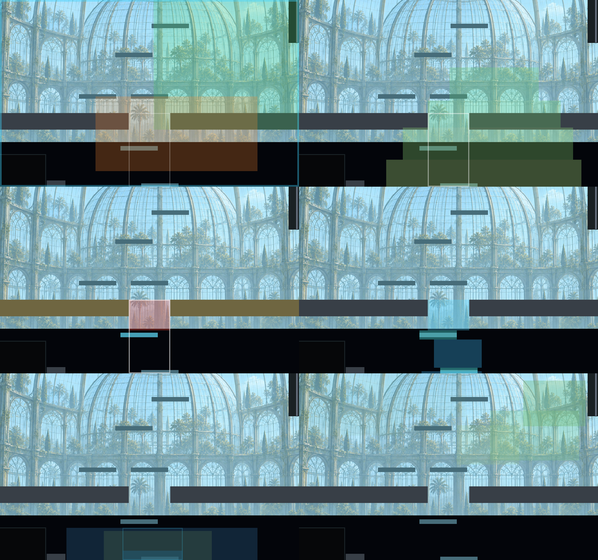
До / после corrective pass
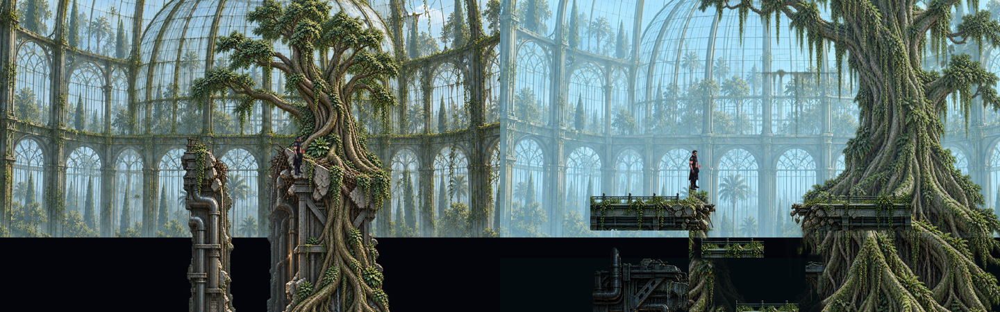
Разрыв Main platform
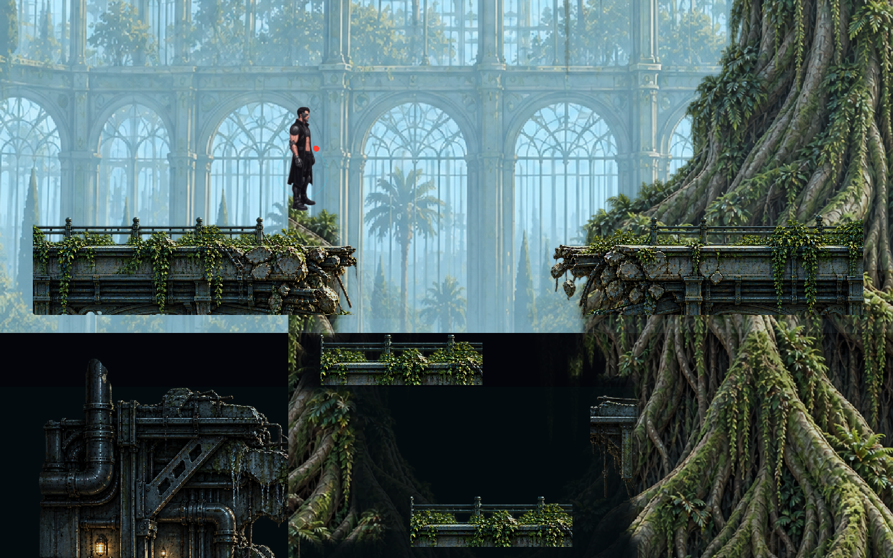
Decay / moss / broken glass
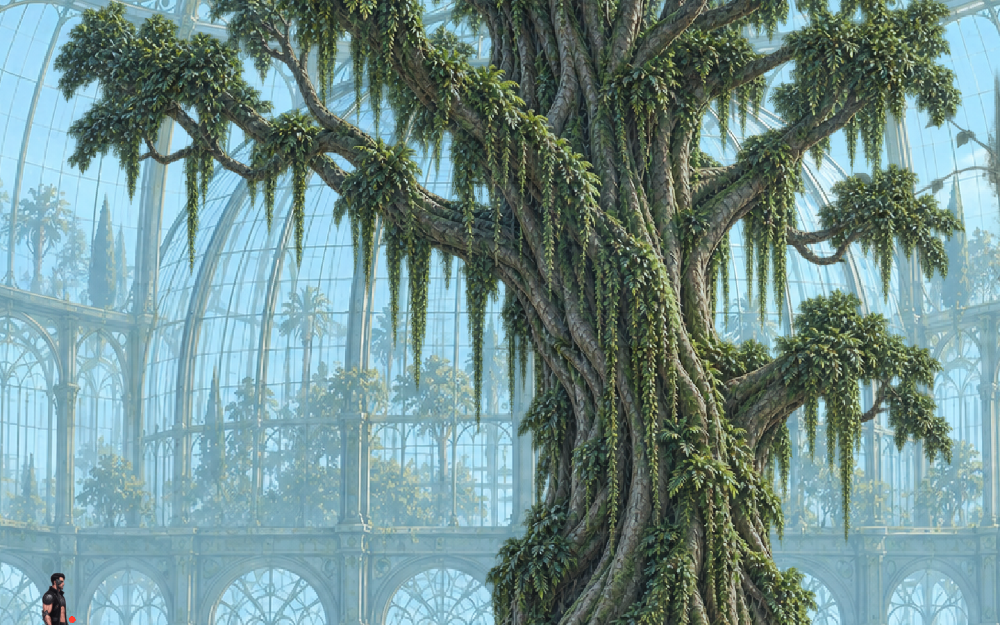
Центральная камера

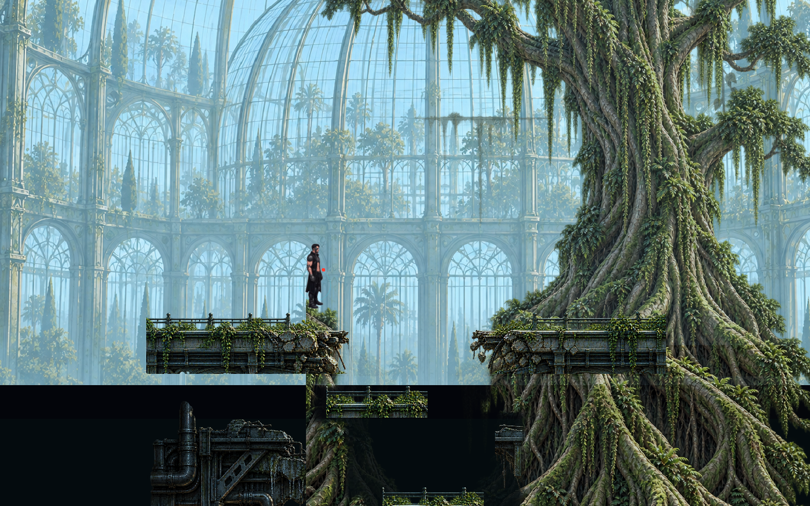
Lower roots / contact

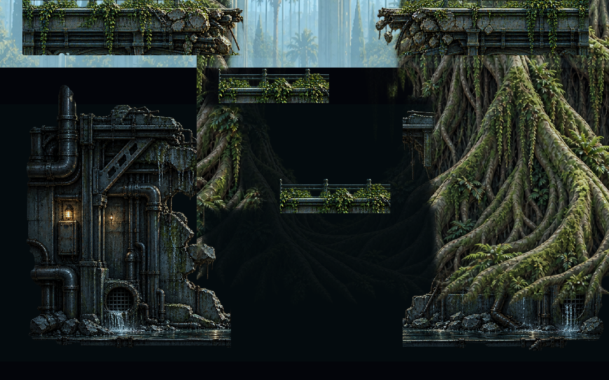
Левый предел

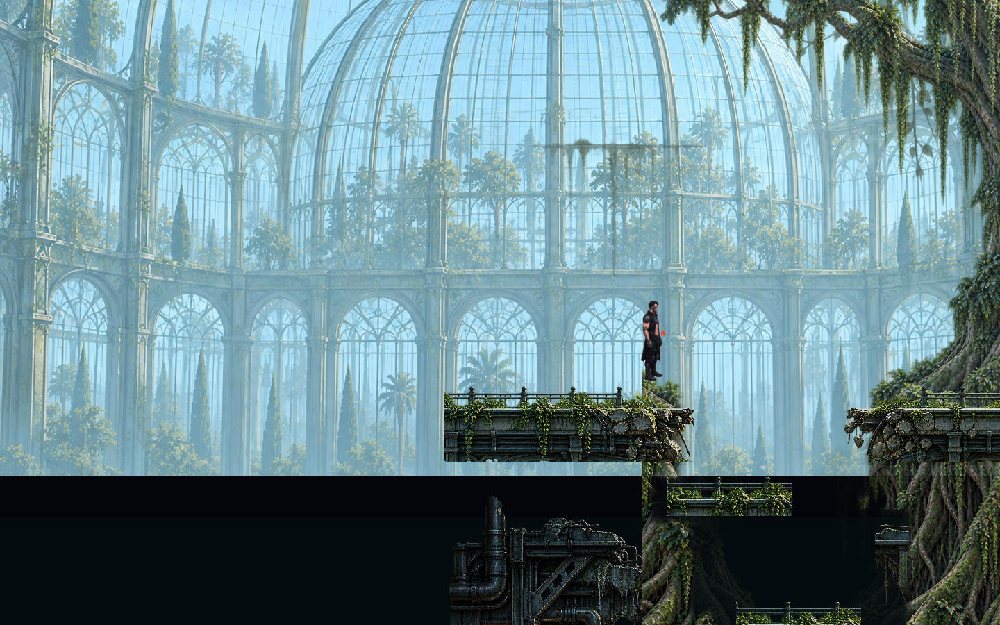
Правый предел

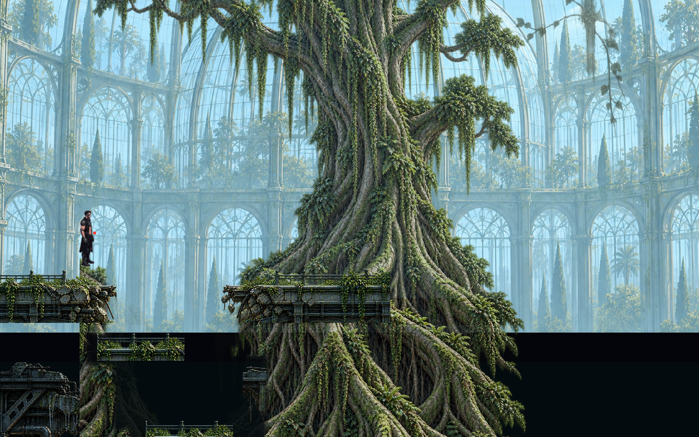
Самая высокая камера

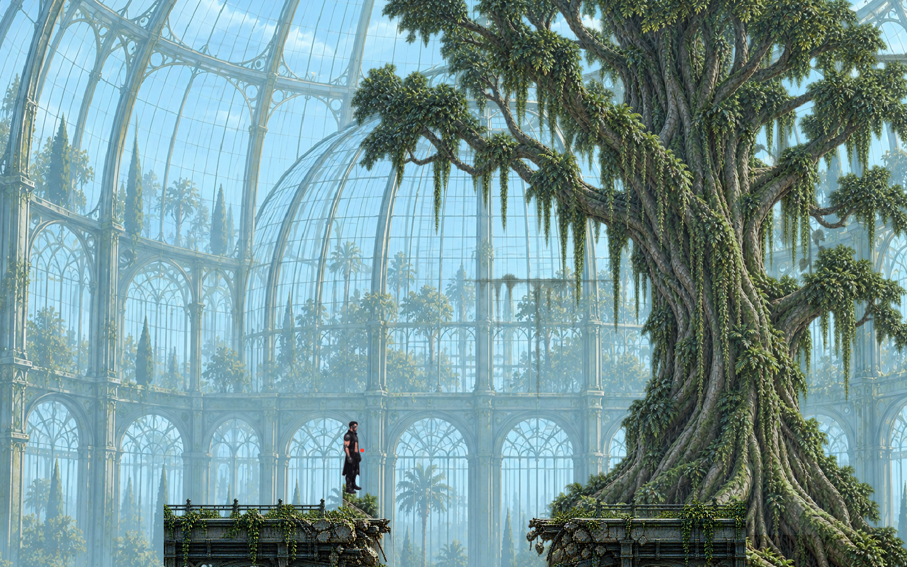
Самая низкая камера

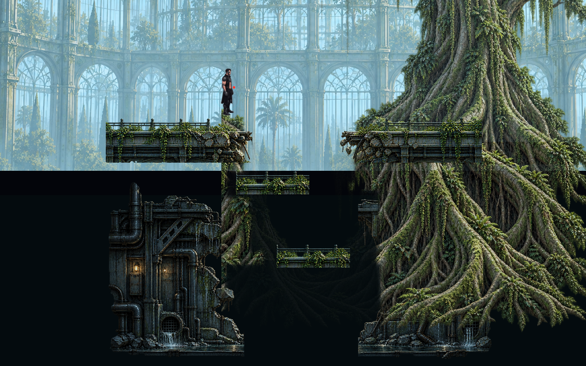
Grayscale / value

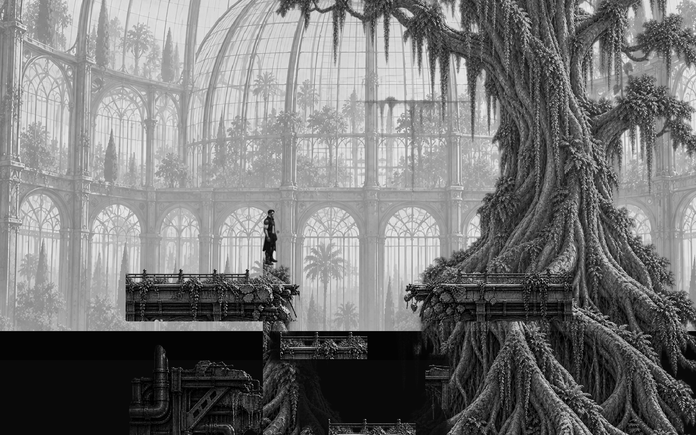
Route overlay

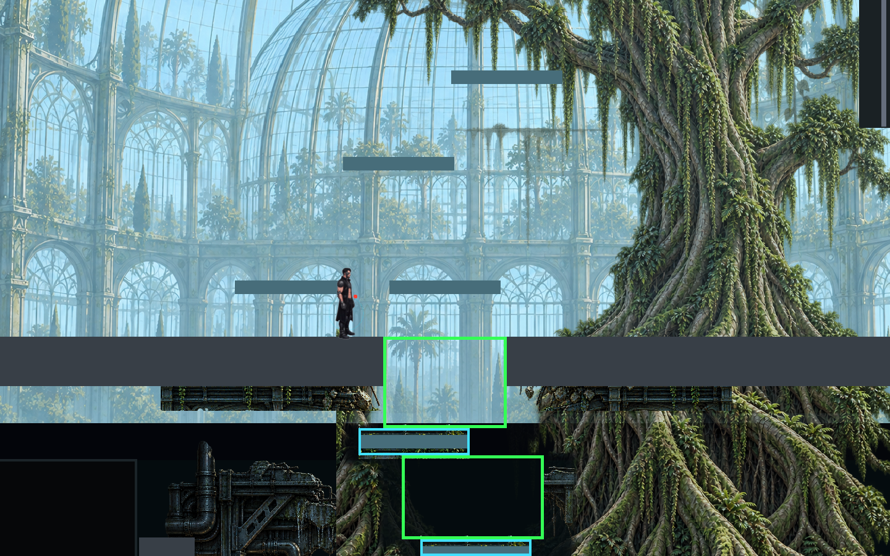